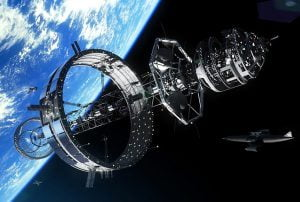
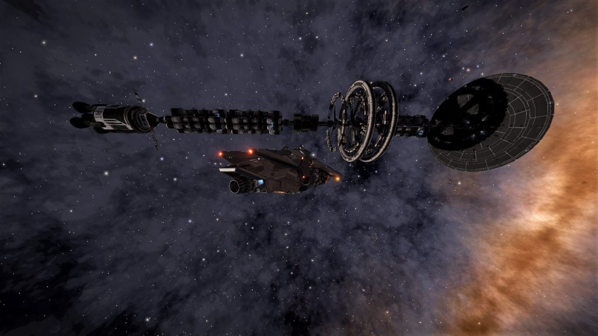

This is an archive of Drew Wagar‘s lore guide, available here with his kind permission. Drew is no longer actively maintaining his lore pages, and they may not be accurate post v2.4 of Elite Dangerous.
See the Canonn Codex entry on Generation Ships for the known ships and their locations.

A Generation ship
The story of the Generation ships is the story of adventurers that first went out into the void in far more primitive vessels than those enjoyed by Elite Dangerous players in the 34th century.
In the history of Elite Dangerous (which runs from the present day to the in-game year of 3302), the centuries between 2200 and 2700 have been labelled as a ‘golden age’ of exploration. Technology was primitive by the standards of the 34th century, with no FTL comms, no hyperspace, primitive weapons and harsh living conditions.
The article then makes reference to one major component of Elite Dangerous Lore… the mythical generation ships. So what is a Generation ship? It’s a pretty well established SF trope. Have a look at the wikipedia entry and report back, Commander!
Many thousands of generation ships left Earth from the 21st century (the first leaving in 2097), but it seems the process of launching them on their way was not well regulated. Many were not as well prepared as they should have been. In those days when faster-than-light communication didn’t exist, many of these potential settlers faced terrible risks alone, travelling thousands of light years into the void, not unlike the wagon trains that set out across continental US in the 18th and 19th centuries before them. Records indicate that up to 70,000 such ships were launched.
Some were successful at founding new worlds. Most were not. Some, reportedly, even managed to return with tales of their adventures.
Many were lost in deep space, the dead hulk of their ship carrying on an almost endless trajectory ever deeper into space. Others managed to land and survived for many decades before being overtaken by some local disaster.
Some may still be alive, just restricted to low power light speed communications, or no comms at all, as their equipment has failed over the centuries in between. We say they have disappeared without trace, but just maybe some will find some traces of them that are still out there.
Some are into their 30th generation. Those that are still enroute are travelling in ‘normal’ space, at relativistic velocities.
Interestingly enough, if you ‘do the math’, you’ll discover that due to the relativistic speeds, time aboard the Generation ships will have been compressed for the occupants. A further observation results in the conclusion that many of the ships should be reaching their destinations around about now if you assume they were targeted at stars within 100 lightyears (which seems plausible for 21st-24th century technology). The maximum distance they could realistically travel would be around a 1,000 lightyears (probably much less), so both the ships and the civilisation that emerged, if any did make it, should be easily reachable by today’s explorers.

As expected, the ship was not too far from the core-worlds, in this case just a little over 50 lightyears out. It seems likely that others will be discovered.